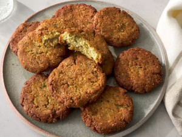

Falafel

Description
Falafel made with canned chickpeas — just like the ones you taste in a Greek restaurant! This recipe makes about 12 patties.
Serve with hummus or tzatziki sauce.
Ingredients
- Chickpeas, drained, one and a half can
- Onion, chopped, one and a half unit
- Parsley, fresh chopped, three qarter of a cup
- Garlic, chopped, three cloves
- Eggs, two units
- Cumin, ground, one tablespoon
- Coriander, ground, one and a half teaspoon
- Salt, one and a half teaspoon
- Lemon, juiced, one and a half teaspoon
- Baking powder, one and a half
- Black pepper, ground, one pinch
- Cayenne pepper, ground, one pinch
- Bread crumbs, one and a half cup
- Olive oil, one tablespoon
Steps
- Gather all ingredients.
- Mash chickpeas in a bowl using a masher. Combine mashed chickpeas, onions, parsley, and garlic in a blender; blend until smooth.
- Mix eggs, cumin, coriander, salt, lemon juice, baking powder, black pepper, and cayenne together in a bowl.
Add chickpea mixture and mix together.
Add bread crumbs slowly and combine using your hands until mixture will hold together when frying.
- Heat oil in a skillet over medium-high heat. Form mixture into twelve 3-inch diameter patties.
Fry patties in hot oil until browned, 3 to 4 minutes per side.